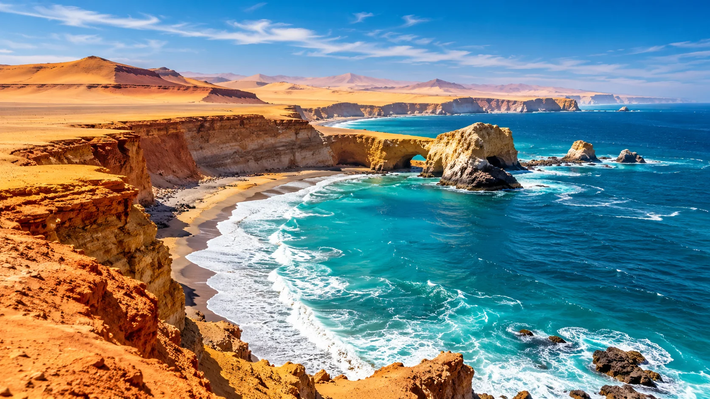
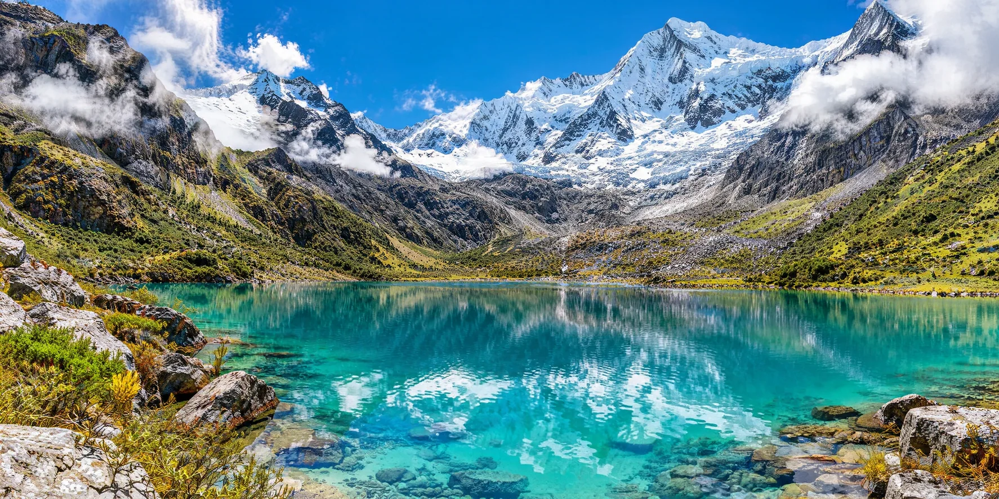
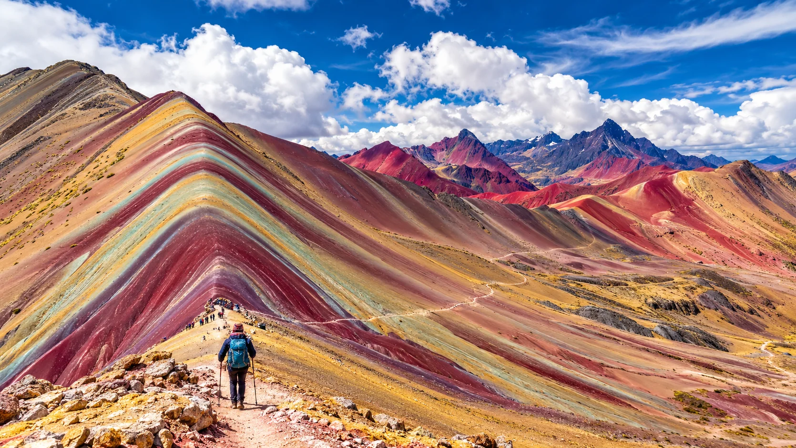
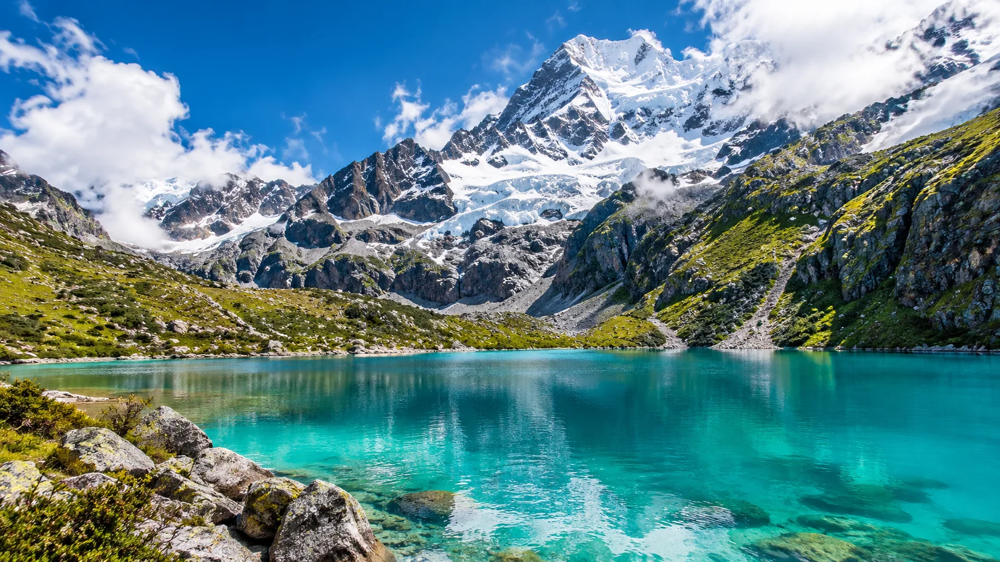

PERÚ EN EL CORAZÓN · EL MUNDO EN EL HORIZONTE
El mundo te espera,
nosotros te conectamos.
Descubre paisajes extraordinarios, organiza experiencias y conecta cada parte de tu viaje con atención personalizada.
TU PRÓXIMA HISTORIA EMPIEZA AQUÍ
¿A dónde vamos?
Encuentra opciones y continúa con el proveedor correspondiente.
01 · DESCUBRE DESTINOS
Un país de contrastes. Infinitas experiencias.
Playas, ciudades, montañas, cultura, gastronomía y selva: explora los paisajes que hacen único cada viaje.
 Cusco y Machu PicchuPatrimonio, cultura y aventura
Cusco y Machu PicchuPatrimonio, cultura y aventura Ica y HuacachinaOasis, dunas y adrenalina
Ica y HuacachinaOasis, dunas y adrenalina
ParacasMar, islas y naturaleza Arequipa y ColcaVolcanes, historia y paisajes
Arequipa y ColcaVolcanes, historia y paisajes
Huaraz y Cordillera BlancaLagunas y alta montaña Amazonía peruanaRíos, selva y biodiversidad
Amazonía peruanaRíos, selva y biodiversidad Puno y lago TiticacaTradiciones del altiplano
Puno y lago TiticacaTradiciones del altiplano LimaCultura, gastronomía y costa
LimaCultura, gastronomía y costa
VinicuncaMontañas de colores
Lagunas andinasSenderismo y naturalezaValle SagradoPueblos y paisajes andinosCosta del PerúPlayas y horizontes abiertosRUTAS · CULTURA · NATURALEZA · GASTRONOMÍA
Hay mucho más por descubrir
Ideas de lugares para explorar y diseñar itinerarios personalizados. La presencia de un destino no implica un paquete confirmado.
Andes y cultura
02 · MÁS DESTINOS POR DESCUBRIR
Viaja tan lejos como imagines.
Explora ideas para viajes internacionales, sujetos a coordinación y disponibilidad.


NUESTROS SERVICIOS
Todo lo que necesitas
para tu viaje, conectado.
Organizamos y coordinamos las piezas de tu viaje: desde boletos y alojamiento hasta experiencias, transporte y necesidades empresariales.
Cuéntanos tu idea Vuelos y boletosAéreos, terrestres, marítimos y ferroviarios.Explorar pasajes ↗
Vuelos y boletosAéreos, terrestres, marítimos y ferroviarios.Explorar pasajes ↗
 Hoteles y hospedajeHoteles, hostales, resorts y albergues.Explorar estancias ↗
Paquetes turísticosViajes receptivos, emisivos e internos.Ver paquetes ↗
Hoteles y hospedajeHoteles, hostales, resorts y albergues.Explorar estancias ↗
Paquetes turísticosViajes receptivos, emisivos e internos.Ver paquetes ↗
 Transporte y transfersTraslados, transporte turístico y alquiler.Ver transporte ↗
Transporte y transfersTraslados, transporte turístico y alquiler.Ver transporte ↗
 Experiencias y asistenciaGuiado y apoyo al viajero.Descubrir más ↗
Experiencias y asistenciaGuiado y apoyo al viajero.Descubrir más ↗
 Empresas y eventosCongresos, ferias, convenciones y consultoría.Soluciones corporativas ↗
Empresas y eventosCongresos, ferias, convenciones y consultoría.Soluciones corporativas ↗
VIAJES QUE INSPIRAN
Cada destino abre una nueva historia.
Descubre inspiración en movimiento y solicita propuestas a medida. Los paisajes son ilustrativos; las opciones se confirman según fechas y disponibilidad.
Diseñar mi viaje ↗
DE LA IDEA A LA EXPERIENCIA
Tu próximo viaje
empieza con una conversación.
Cuéntanos a dónde quieres ir o qué necesitas coordinar. Te ayudamos a definir los siguientes pasos.